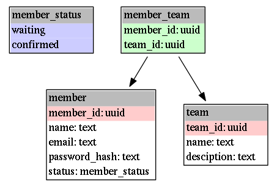

Create clean database schemas easily with jinx Database Tools
by Clement Delafargue on March 31, 2014
jinx Database Tools (or jdbt) is a small script designed to help design and create database schemas by factoring out the boring parts which can be derived automatically (primary keys, foreign keys, not null constraints).
The code is on github: https://github.com/divarvel/jdbt
Disclaimer
jdbt does not check the integrity of the model you describe. It is to be used as a convenient tool to generate your schema. Don’t rely too much on it.
You only have to describe the schema of your data in a concise language, and jdbt automatically adds implicit constraints and generate full SQL output.
jDbT automatically adds a primary key if there is none explicitly declared. It also detects foreign references, assumes that columns are not nullable by default and allow a concise syntax for nullability, unicity constraints and enums.
For now, it outputs SQL (postgresql-compliant) and dot. I plan to add support for play evolution scripts, haskell and scala records, and even dummy data to populate the database.
member_status: # declare an enum
- waiting
- confirmed
member: # Primary key automatically inferred
name: text # not null by default
+email: text # unicity constraint on email
password_hash: text
status: member_status | 'waiting' # default value
team: # Primary key automatically inferred
+name: text # unicity constraint on name
?desciption: text # nullable description
member_team:
member_id: # Foreign reference to member
team_id: # Foreign reference to team
__pk: [ member_id, team_id ] # manually declare a pk on (member_id, team_id)The member and team entities don’t declare a primary key, so jDbT infers respectively member_id and team_id, both of type uuid as primary keys.
For member_team.member_id and member_team.team_id, jdbt detects that they are foreign keys, so it infers their type as uuid and adds a foreign constraint.
jdbt schema.yml > schema.sql
jdbt schema.yml dot | dot -Tpng > schema.png
create type member_status as enum('waiting', 'confirmed');
create table member (
member_id uuid primary key,
name text not null,
email text not null unique,
password_hash text not null,
status member_status default 'waiting'::member_status not null
);
create table team (
team_id uuid primary key,
name text not null unique,
desciption text
);
create table member_team (
member_id uuid not null references member(member_id),
team_id uuid not null references team(team_id),
primary key (member_id, team_id)
);